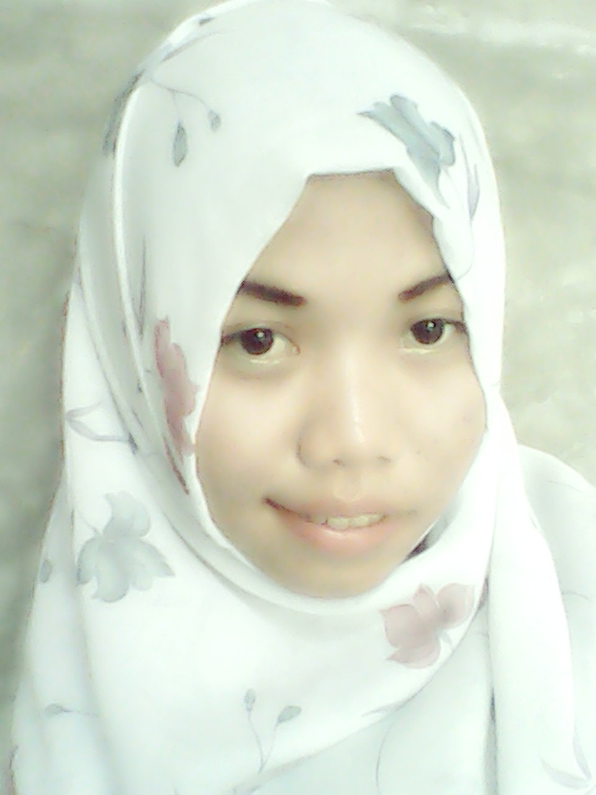

Biodata

Nama:Witri
Tempat tanggal lahir:Air joman,16 oktober 1996
Alamat:Air joman
Agama:Islam
Pekerjaan :Mahasiswa
|
Daftar Riwayat Hidup
WITRI
- Nama: Witri
- Jenis Kelamin: Wanita
- Alamat:Air joman,Kisaran
- Tempat, Tanggal Lahir: Air joman, 16 Oktober 1996
- Status:Belum Menikah
- Agama: Islam
- Phone: +6281362037572
- E-mail:Witrri@gmail.com
Pendidikan
- 2011-2014 : SMK PEMDA Kisaran
- 2008 – 2011 : SMP N 2 Air jomani
- 2002 – 2008 : SD N Air joman
Kemampuan
- Mengerti dan dapat mengoperasikan Microsoft Office, Windows XP, Personal Computer & HTML
- Mengerti SEM (Search Engine Marketing) : Search, GDN, Youtube, Facebook Ads
|
STMIK AMIK ROYAL KISARAN
STMIK AMIK ROYAL adalah Perguruan Tinggi Swasta yang berada di pusat Kota Kisaran Kabupaten Asahan Sumatera Utara. STMIK AMIK ROYAL menyelenggarakan pendidikan di bidang teknlogi informasi yang menghasilkkan SDM cerdas, Profesional, Handal, Terampil, dan siap kerja sesuai kebutuhan kerja saat ini.
STMIK AMIK ROYAL menyelenggarakan program studi Sistem Informasi dan Sistem Komputer jenjang S-1 di Kampus STMIK, Program Studi Manajemen Informatika dan Teknik Komputer jenjang D-3 di kampus AMIK yang dibimbing oleh dosen berpengalaman dan handal dengan jenjang S-1, S-2, S-3. Hal ini terbukti dengan banyaknya alumi STMIK AMIK ROYAL yang berkerja diperusahaan swasta dan instansi pemerints(PNS).
1. STMIK ROYAL
· VISI
Menjadikan Perguruan Tinggi Unggulan yang menghasilkan sumber daya manusia berkompeten dibidang Sistem dan Teknologi Informasi yang mampu bersaing sesuai kebutuhan pengguna lulusan masa kini dan masa depan.
· MISI
Menghasilkan lulusan yang berkompeten, mandiri, inovatif, adaptif dan mampu bersaing ditingkat regional, nasional dan internasional. membantu mengenbangkan kebutuhan industri dan pengguna lulusan dibidang Teknologi Informasi dan Komputer.
2. AMIK ROYAL
· VISI
Menjadikan Perguruan Tinggi Unggulan Tridarma bermutu yang menghasilkan lulusan profesional dibidang Teknologi Informasi yang sesuai kebutuhan pengguna dan mampu bersaing .
· MISI
Menyelenggarakan pendidikan tinggi Bermutu, inovatif, adaptif, dan futuristik dibidang Teknologi Informasi. Memfasilitasi dan membina program studi dalan kegiatan penelitian yang sesuai perkembangan IPTEK dibidang teknologi informasi. Memfasilitasi dam membina program studi dalam kegiatan pengabdian kepada masyarakat dibidang teknologi informasi. Memyellenggarakan kegiatan kerja sama dengan penguna lulusan dengan konsisten den kontiniu dibidang teknologi informasi. Menyelenggarakankegiatan kewirausahaan dibidang teknologi informasi untuk kesejahteraan sivitas akademik AMIK ROYAL. |
|